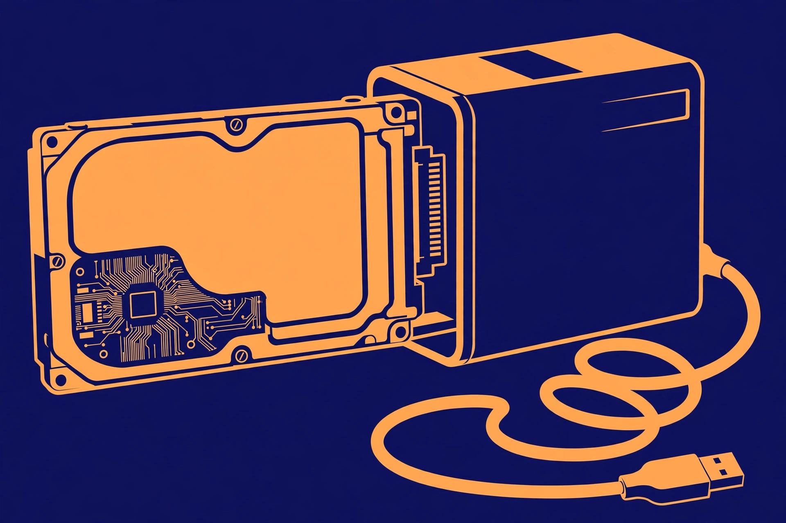

Turn an old hard drive into external storage

Every retired PC leaves behind the most reusable part in the box: its hard drive. A bare internal drive cannot plug into a modern laptop on its own, but a simple enclosure or adapter cable bridges it to USB — and suddenly the drive you were about to recycle is free external storage for backups, photo archives, or moving big files between machines. The conversion itself takes minutes. The part most guides skip is everything around it: whether the drive deserves your trust, which connector your drive actually needs, and how to erase it properly before its second life.
Step zero: check the drive's health before it holds anything
An old drive is not automatically a good drive. Before it holds the only copy of anything, check its self-reported health. Drives track their own condition through S.M.A.R.T. monitoring data, and a free tool such as CrystalDiskInfo reads it and boils it down to a plain verdict: Good, Caution, or Bad. That verdict becomes a simple decision rule:
- Good — the drive can take a normal storage job: backups, archives, a working file shuttle.
- Caution — a health attribute has crossed a warning threshold. Copy anything valuable off it, and do not let it become the only home for new files. Retrieval duty only.
- Bad — a critical threshold has failed. Do not convert this drive; recycle it. An enclosure cannot fix a dying mechanism.
One wrinkle: many USB-to-SATA bridge chips do not pass S.M.A.R.T. data through, so a drive inside a cheap enclosure may report "Unknown" rather than a verdict. That is a limitation of the bridge, not proof of failure — check the drive connected directly to a SATA port inside a desktop, or through an adapter that supports S.M.A.R.T. passthrough, before deciding. And note the difference between drive types: a failing spinning drive often announces itself with new clicking or grinding sounds, while an SSD gives no audible warning at all. Health-monitoring software matters more for SSDs, not less, precisely because they fail silently.
Three shapes of conversion: enclosure, adapter, dock
All three do the same basic job — internal connector on one side, USB on the other — but they suit different numbers of drives and different habits:
| Shape | Best for | What to know |
|---|---|---|
| Enclosure | One drive with a permanent new job | The drive screws or slides into a closed case and becomes a finished external drive. A 2.5-inch USB-C enclosure such as Eaton Tripp Lite's U457-025-G2-WPB connects SATA III, II, or I drives at up to 10 Gbps with UASP support. |
| Adapter cable | Occasional access, data rescue, several mixed drives | No case — the bare drive sits on the desk. Combo adapters such as StarTech's USB3SSATAIDE handle both SATA and older IDE drives in 2.5-inch and 3.5-inch sizes, which makes them the rescue-tool option. |
| Dock | Rotating through drives often | Drives drop into top-loading slots, toolless, and hot-swap. StarTech's UNIDOCKU33 takes two 2.5/3.5-inch SATA or IDE drives over USB 3.2 Gen 1 at 5 Gbps. |
If you have exactly one healthy drive and one job for it, buy the enclosure and be done. If your drawer holds a small museum of drives, the adapter or dock pays for itself in convenience.
The power rule: 2.5-inch vs 3.5-inch, SATA vs IDE
More conversions fail over power than over connectors. Laptop-sized 2.5-inch drives sip power: StarTech's 2.5-inch enclosure is powered directly from the USB port, with no power supply to find or lose. Desktop-sized 3.5-inch drives are different — they need 12 volts that USB does not provide, so a 3.5-inch enclosure ships with an AC adapter (StarTech's 3.5-inch model includes one, rated 12V DC at 2A). A 3.5-inch drive in a bus-powered 2.5-inch enclosure will simply never spin up, and the enclosure will look broken when it is only underpowered.
Connector generation matters just as much. SATA drives use a flat data-and-power combo connector (7+15 pin). Older IDE/PATA drives — the kind found in PCs from the early 2000s — use a wide 40-pin ribbon-style connector plus a separate 4-pin Molex (LP4) power plug, and 2.5-inch IDE drives use a combined 44-pin connector. A SATA-only enclosure cannot touch any of those; a SATA/IDE combo adapter includes the IDE data connector, the Molex power lead, and a universal power adapter in the box. Read the label on your drive before ordering anything: it states the interface, the size, and the power it expects, and thirty seconds with that label prevents the classic wrong-enclosure purchase.
The conversion, step by step
- Shut the old PC down, unplug it, and remove the drive from its bay, disconnecting the data and power cables. Handle the drive by its edges and set it on a non-conductive surface.
- Run the health check from step zero — directly on a SATA port if you can, or through your adapter — and apply the Good / Caution / Bad rule before copying a single file onto it.
- Fit the drive into the enclosure (slide it onto the connector until it seats, then close the case), or plug the adapter onto the drive's connector. For an IDE drive, connect both the data connector and the Molex power lead.
- If the drive is 3.5-inch, or an IDE drive on an adapter, connect the included 12V power adapter to the wall as well as the USB cable to the computer. A 2.5-inch SATA drive needs only the USB cable.
- Plug in and listen: a healthy spinning drive hums quietly and the computer announces a new device. Clicking, beeping, or repeated spin-up attempts mean stop — that drive failed the practical half of the health check.
- Open your operating system's disk tool (Disk Management on Windows, Disk Utility on a Mac). If the drive shows up with its old partitions, skip to the wiping section below before formatting. If it is new to this machine, initialize it, create one partition, and format it — exFAT if it must move between Windows and Mac, NTFS for Windows-only use, APFS or HFS+ for Mac-only use.
- Copy a large test file onto the drive, then copy it back and confirm it opens. Only then start trusting the drive with real work.
Wipe it properly before its second life
If the drive still holds the old PC's life — documents, photos, browser data — a
quick format is not an erasure. On Windows, DiskPart offers two levels, and the
difference matters. The clean command removes partition and volume
information only; the underlying data may still be recoverable until it is
overwritten. The clean all command writes zeros to every sector of
the disk, which makes recovery impractical — slower, but the right choice before a
drive changes jobs or hands. Two cautions make this safe: back up or rescue
anything you still need first, because neither command asks twice; and after
select disk, always run detail disk and confirm the
size and model match the old drive — never the computer's own system disk — before
typing clean anything. For a drive staying in your own household,
clean plus a fresh format is a reasonable reset; for a drive being
given away, sold, or recycled, use clean all or the manufacturer's
erase tool.
What success looks like
The converted drive appears in your file manager with its full capacity, its health verdict reads Good, a large test file copies on and back without errors, and — for a 3.5-inch drive — it spins up reliably every time because its power adapter is connected. At that point the drive has a real second job: a backup target, a photo archive, or a big-file shuttle that cost you an enclosure instead of a new external drive.
FAQ
Can every old drive become external storage? No. A drive that reports Bad health, clicks, or repeatedly spins up and down has failed the health gate — rescue data from it if you can, then recycle it.
Why does my 3.5-inch drive not appear at all? Almost always power. It needs its 12V adapter plugged in; USB alone cannot run it.
The health tool says "Unknown" in the enclosure. Is the drive dead? Probably not — many USB bridge chips block S.M.A.R.T. data. Check the drive on a direct SATA connection before judging it.